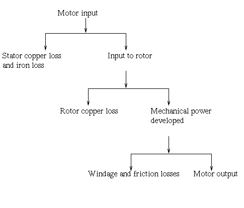

Iron or Core Losses
Mechanical and Brush Friction Losses
Variable Losses
Efficiency of Three Phase Induction Motor
There are two types of losses occur in three phase induction motor. These losses are,
- Constant or fixed losses,
- Variable losses.
Constant or Fixed Losses
Constant losses are those losses which are considered to remain constant over normal working range of induction motor. The fixed losses can be easily obtained by performing no-load test on the three phase induction motor. These losses are further classified as-
- Iron or core losses,
- Mechanical losses,
- Brush friction losses.
Iron or Core Losses
Iron or core losses are further divided into hysteresis and eddy current losses. Eddy electric current losses are minimized by using lamination. Since by laminating the core, area decreases and hence resistance increases, which results in decrease in eddy currents. Hysteresis losses are minimized by using high grade silicon steel . The core losses depend upon frequency. The frequency of stator is always supply frequency, f and the frequency of rotor is slip times the supply frequency, (sf) which is always less than the stator frequency. Hence the rotor core loss is very small as compared to stator core loss and is usually neglected in running conditions.
Mechanical and Brush Friction Losses
Mechanical losses occur at the bearing and brush friction loss occurs in wound rotor induction motor. These losses occurs with the change in speed. In three phase induction motor the speed usually remains constant. hence these losses almost remains constant.
Variable Losses

These losses are also called copper losses. These losses occur due to electric current flowing in stator and rotor windings. As the load changes, the electric current flowing in rotor and stator winding also changes and hence these losses also changes. Therefore these losses are called variable losses. The copper losses are obtained by performing blocked rotor test on three phase induction motor.
The main function of induction motor is to convert an electrical power into mechanical power. During this conversion of electrical energy into mechanical energy the power flows through different stages. This power flowing through different stages is shown by power flow diagram. As we all know the input to the three phase induction motor is three phase supply. So, the three phase supply is given to the stator of three phase induction motor.
Let, Pin = electrical power supplied to the stator of three phase induction motor,
VL = line voltage supplied to the stator of three phase induction motor,
IL = line current,
Cosφ = power factor of the three phase induction motor.
Electrical power input to the stator, Pin = √3VLILcosφ
A part of this power input is used to supply stator losses which are stator iron loss and stator copper loss. The remaining power i.e ( input electrical power – stator losses ) are supplied to rotor as rotor input.
So, rotor input P2 = Pin – stator losses (stator copper loss and stator iron loss).
Now, the rotor has to convert this rotor input into mechanical energy but this complete input cannot be converted into mechanical output as it has to supply rotor losses. As explained earlier the rotor losses are of two types rotor iron loss and rotor copper loss. Since the iron loss depends upon the rotor frequency, which is very small when the rotor rotates, so it is usually neglected. So, the rotor has only rotor copper loss. Therefore the rotor input has to supply these rotor copper losses. After supplying the rotor copper losses, the remaining part of Rotor input, P2 is converted into mechanical power, Pm.
Let Pc be the rotor copper loss,
I2 be the rotor electric current under running condition,
R2 is the rotor resistance,
Pm is the gross mechanical power developed.
Pc = 3I22R2
Pm = P2 – Pc
Now this mechanical power developed is given to the load by the shaft but there occur some mechanical losses like friction and windage losses. So, the gross mechanical power developed has to supplied these losses. Therefore the net output power developed at the shaft, which is finally given to the load is Pout.
Pout = Pm – Mechanical losses (friction and windage losses).
Efficiency of Three Phase Induction Motor
Efficiency is defined as the ratio of the output to that of input,
Rotor efficiency of the three phase induction motor ,
= gross mechanical power developed / rotor input
Three phase induction motor efficiency,
Three phase induction motor efficiency
 by
by